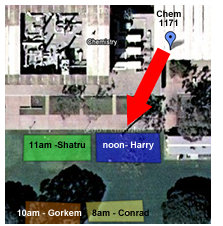

CS16, Wednesday 10/28/2009
Field day

- We'll start in the lecture hall, going over how arrays are passed to functions.
- We'll then quickly review the selection sort exercise.
- We'll then go over what we are going to do outside.
- We start outside by gathering in our small groups, in a circle around your group leader, in the location shown on the diagram.
- We'll go around quickly and say our name, and major, and what year we are.
- Your leader will divide you into two equal size teams:
(Leaders: don't count off—just indicate: team one starts "here", and ends "here")
- There are squares on the sidewalk that represent the elements of an array, a[0], a[1], etc.
Everyone from Team 1 get into a square. Your group leader will hand you an array element.
Put the pink line after the last person in the array.
Team 2 gathers to watch.
- A volunteer from Team 2 will walk down the array and do the algorithm.
- Start with 0 for "index of max so far", and i = 1.
- For each i from 1 to n-1
- Stand beside a[i], facing team 2.
- Ask team 2, is a[i] larger than a[max index so far]?
- Team 2 shouts in unison "YES" or "NO"
- If they shout YES, change index of max so far to i
- Then, increment i, and move to the next array element.
- When all elements have been examined:
- The person at a[index of max so far] should swap index cards with the last person before the pink line
- Then move the pink line one person closer to a[0]
- When you've done this n-1 times, the numbers should be sorted.
- Let team 1 do this twice. Then swap places, and let Team 2 stand in to do the array exercise.
- Next, go back to sitting in a circle. But, find a pair partner to work with.
- Those that have pair partners, start forming a circle
- Those without pair partners, stand in the center of the circle
- The TA will help those who don't have a partner get one
- If there is an "odd" number of students, we'll form exactly one group of three per lab
- Take one of the index cards with a number on it, and on the back, write the names of you and your pair partner.
- When you give this to the TA, the TA will give you H06 and H07 to work on.
- Once that happens, if it isn't 1:50pm yet, or if you and your pair are both available, you are encourged to start working on H06 and H07.
- Either way, though, you are free to go at that point.